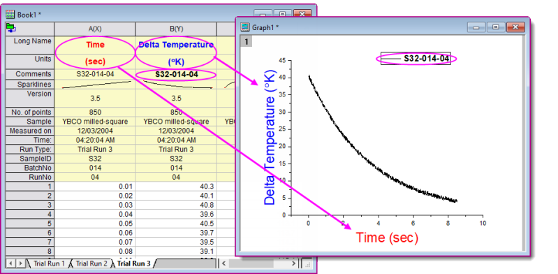
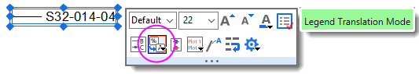
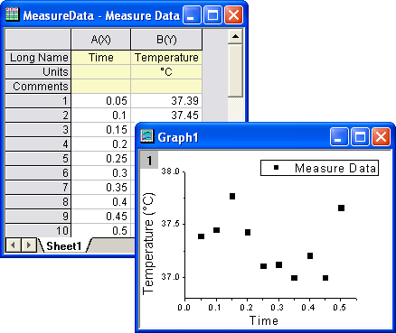

FAQ-154 Wie passe ich die Standardachsentitel und -legende benutzerdefiniert an?
Customize-AxisTitle
Letztes Update: 08.01.2024
Es gibt mehrere Möglichkeiten, Text in Diagrammachsentiteln oder Legenden benutzerdefiniert anzupassen, die beste Lösung ist aber im Allgemeinen, die Metadaten des Arbeitsblatts zu nutzen -- oftmals, aber nicht beschränkt auf Daten der Spaltenbeschriftungszeilen -- wie wir es im folgenden Beispiel gemacht haben.
- 
Per Standard wird die Vorlage des Liniendiagramms, die zum Erstellen dieses Diagramms verwendet wird, so konfiguriert, dass sie die folgenden Beschriftungszeilendaten verwendet:
- Der X-Achsentitel wird aus Langname + Einheiten oder "Time(sec)" der X-Spalte gebildet.
- Der Y-Achsentitel wird aus Langname + Einheiten oder "Delta Temperature(K)" der Y-Spalte gebildet.
- Der Eintrag der Diagrammlegende wird aus den Kommentaren oder "S32-014-04" der Y-Spalte gebildet.
Wenn die Einstellungen der Standardvorlage nicht zufriedenstellend sind, können Sie sie modifizieren mit der Option, Ihre Anpassungen in einer Diagrammvorlage zu speichern. Tun Sie Folgendes:
- Diagrammachsentitel und -legenden verwenden die LabTalk-Substitution, um Text aus Projektvariablen zu erzeugen.
- Der Standardtitel der X-Achse für 2D-Diagramme verwendet die Notation %(?X); der Titel der Y-Achse verwendet die Notation %(?Y). Diese Notation ist mit dem Quellenspaltennamen verknüpft (Langname wenn verfügbar, ansonsten Kurzname) und kann mit der Beschriftungszeile Einheiten kombiniert werden. Dazu gehen Sie zu Details Zeichnung > Registerkarte Legenden/Titel und aktivieren das Kontrollkästchen Einheiten zeigen (wenn verfügbar)... (siehe unten Anzeige der Einheiten im Achsentitel benutzerdefiniert anpassen).
- Der Text der Standardlegende kann modifiziert werden, indem Sie zu Details Zeichnung > Registerkarte Legenden/Titel gehen und den Übersetzungsmodus von %(1),%(2) ändern, um andere Beschriftungszeilendaten zu verwenden, einschließlich "Benutzerdefiniert". Seit Origin 2021 können Sie auf das Legendenobjekt klicken und die Schaltfläche Übersetzungsmodus der Legende auf der Minisymbolleiste verwenden, um die Beschriftungszeilenquelle zu wählen.
- 
.Achsentitel und Legendentext hart kodieren
In einigen Situationen möchten Sie den Achsentitel oder Legendentext womöglich direkt eingeben. Dies kann sogar notwendig sein, wenn Ihre Datendateien keine nützlichen Metadaten enthalten.
- Klicken Sie doppelt auf den Achsentitel oder Legendentext und überschreiben Sie die existierende Variablennotation mit Ihrem literalen Text. Die direkte Bearbeitung des Legendentexts ist umständlich. Alternativ können Sie den Text im Dialog Eigenschaften der Legende bearbeiten.
- Wie mit Achsentitel und Legendentext, die Arbeitsblattmetadaten einbinden, kann "hartkodierter" Text mit der Vorlage gespeichert werden.
Standardachsentitel und -legende mit der Datei Origin.ini benutzerdefiniert anpassen
Eine weitere Option zum benutzerdefinierten Anpassen von Achsentiteln und Legendentext ist das Bearbeiten der Datei Origin.ini in Ihrem Anwenderdateiordner.
- Schließen Sie Origin.
- Suchen Sie die Datei Origin.ini fin Ihrem Anwenderdateiordner (typischerweise unter C:\Users\user\Documents\OriginLab\Anwenderdateien. Sollten Sie sie dort nicht finden, müssen Sie Origin ausführen, das Skriptfenster öffnen (Fenster: Skriptfenster), "
%Y=" eingeben und Enter drücken).
- Öffnen Sie die Datei Origin.ini in einem Texteditor (z. B. Notepad) und suchen Sie den Abschnitt [Text].
- Suchen Sie die entsprechenden Zeilen XTitle=, YTitle= and Legend= und passen Sie den Teil nach = an. Dies kann ein beliebiger Text sein, einschließlich jenen, die LabTalk-Substitutionsnotationen beinhalten. Hinweis: ; Stellen Sie sicher, dass vor der Anpassung ; vor XTitle=, Y=Title= und Legend= entfernt wurde.
Wenn der Abschnitt [Text] der Datei Origin.ini Folgendes enthält:
[Text] ;Use workbook long name for default legend Legend=\L(%d)%%(%d,@WL)\r\n ;The default X axis title is the long name ;of the first independent dataset XTitle=%%(1X, @LL) ;The default Y axis title is the long name + unit ;of the first dependent dataset YTitle=%%(1Y, @LG)
Das Erstellen eines Standardpunktdiagramms aus Spalte B der im folgenden Screenshot angezeigten Arbeitsmappe erzeugt das Diagramm rechts:
- 
Beachten Sie, dass der Langname der Arbeitsmappe "Measured Data" ist. Er wird im Feld Legende angezeigt. Der Langname der X-Spalte ("Time") wird für den Titel der X-Achse verwendet. Der Titel der Y-Achse ist der Langname ("Temperature") und die Einheit ("oc") der Y-Spalte.
Anzeige der Einheiten im Achsentitel benutzerdefiniert anpassen
Dies gilt für Origin 2016 und höhere Versionen.
Um die Art zu ändern, wie die Einheiten im Achsentitel dargestellt werden:
- Wählen Sie aus dem Origin-Menü Einstellungen: Optionen.
- Klicken Sie im Dialog Optionen auf die Registerkarte Achsen, dann neben das Feld Anzeige der Einheiten für Achsentitel, klicken Sie auf die Menüschaltfläche und wählen Sie die gewünschte Anzeigeoption (z. B. /<U> für Langname / Einheiten anstelle von Langname (Einheiten)).
Schlüsselwörter:Optionen, Anzeige der Einheiten, Achsentitel, Substitutionsnotation, Zeichenkettensubstitution, Sonderzeichen, Diagrammvorlage, Escape-Sequenzen